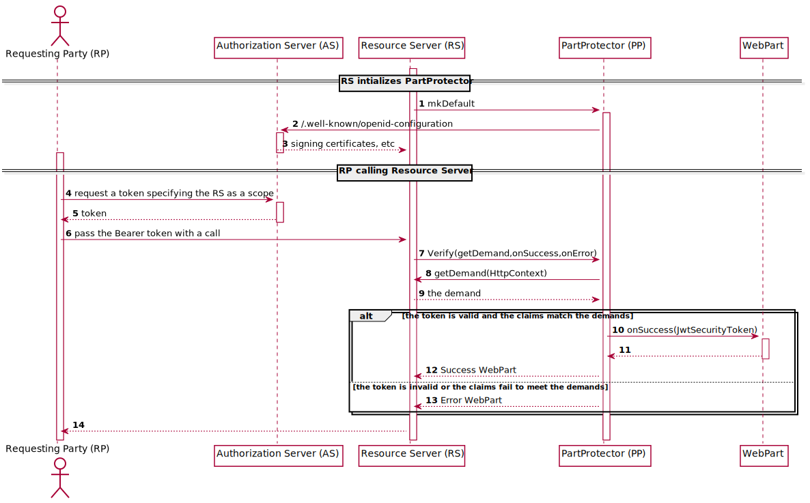

AAD.fs
The library implements core abstractions that can be used to authorize access to web APIs implemented in Giraffe or Suave with Azure Active Directory, as well as primitives to implement authorization for other servers.
Concepts
Requesting Party
A user, a service principal (AD Enterprise Application) or a client (AD Application) acting on behalf of a user.
Resource Server
Suave or Giraffe server hosting the HTTP endpoints.
Roles and scopes
A role is a computed value based on the scope in the request for a token and returned by AD as a claim in the token.
It can be an AD Role (role claim), an AD Application role (roles claim) or a plain scp scope - all of them will be evaluated by default.
Authorization

- When building the application routes construct a
PartProtector - By default well-known URI of the AD authority will be contacted
- Retrieved the signing keys will be used later to verify tokens
- Requsting party requests a token, for example using assigned application roles
- Pass the resulting token along with the http request in
Authorizationheader - Pass the call to
PartProtector.Verify- aWebPartthat implements the validation PartProtectorasks for demands given the context of the requestDemandis a recursive data stucture, a simple single value can be captured in aPatternPartProtectorchecks the token and if matches the claims to the demands- If successful passes the validated token along into the user's
WebPart - If unsuccessful returns either auto-generated or user-specified
WebPartfor the error
For the Giraffe example walktrhough see the sample.